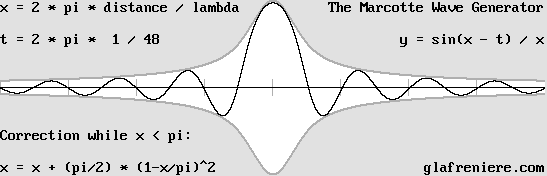
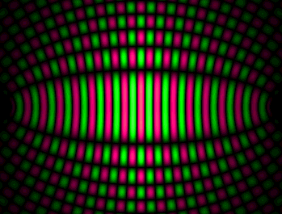
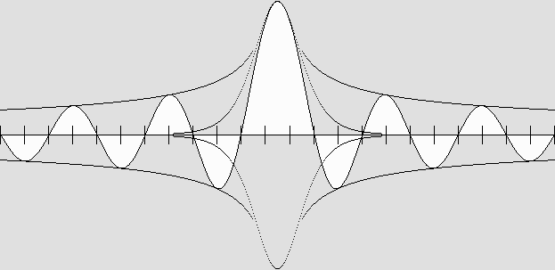
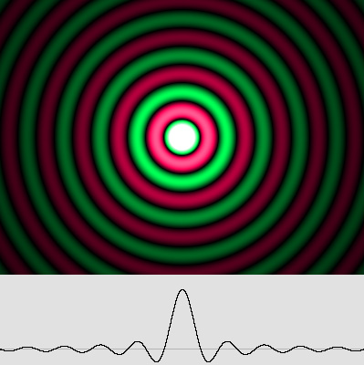

| 00 | 01 | 02 | 03 | 04 | 05 | 06 | 07 | 08 | 09 | 10 | 11| 12 | 13 | 14 | 15 | 16 | 17 | 18 | 19 | 20 | 21 | 22 | 23 | 24 | 25 | 26 | 27 | 28 | 29 | 30 | 31 | 32 | 33 | 34 |
SPHERICAL STANDING WAVES
The electron is a spherical standing wave system.
Surprisingly, spherical standing waves can move as a result of the Doppler effect.
They are not "standing" any more.
The phrase "standing waves" is misleading because such waves can move. Then the node and antinode pattern undergoes a contraction according to the Lorentz transformations. It is clearly visible in the animation shown above. Please observe that the first black antinode near the center is contracted horizontally as well as subsequent layers. The faster they move, the more they become elliptic. But they never contract transversally. Exactly the way Lorentz predicted. The most ignored science. There was almost no practical information about spherical standing waves on the net, except for Milo Wolff's site. So I had to develop the whole science by myself. It was worth the effort because I could finally explain matter and all forces. I would like to give a special thanks to MM. Serge Cabala, Philippe Delmotte, Anselme Dewavrin and Jocelyn Marcotte, among others, who supported and helped me in this enterprise. I suppose that some ancient pioneers did find interesting equations and properties in the past, but up to now there was very few evidence of them. The wave science is the most ignored and scorned of all. It is hard to explain because nuclear physicists know since many decades that matter exhibits wave properties. Clearly, such waves cannot be plane. They should be spherical, and more likely spherical standing waves. In addition, because matter can move, a Doppler effect should occur. This is quite obvious. If waves are involved, the first thing to do should be to study waves. But curiously, there is some sort of taboo regarding matter waves. Nobody ever dares to show them. The unmoving concentric system. Firstly, one should examine the unmoving spherical standing wave system, which is simpler. |

Regular spherical standing waves.
This 3-D view is interesting, albeit it is artificial.
The animated diagram above artificially displays spherical standing waves with a 3-D effect for the central plane only. Standing waves on water should more or less look like this, but electrons are actually spherical standing waves. The Huygens Principle reveals that energy incoming from only one half of a sphere should cross the focal plane in a very special way, explaining why the central antinode diameter is a full lambda wide. Then adding the second half produces the whole system: |

The wave addition is rather complex.
The result is an amazing full lambda wide core, where a pi phase shift occurs.

The electron amplitude.
THE NON-CONCENTRIC SYSTEM
The moving electron undergoes the Doppler effect.
Theoretical incoming and outgoing wave fronts are not concentric any more, but they remain perfectly spherical.
The wave addition reveals a stunning "phase wave", whose speed is given by: 1 / beta in wavelengths per period units.

The .5 c moving electron diagram showing its characteristic envelope still present.
NO INCOMING WAVES.
Standing waves are not made of traveling waves. It is a totally different wave system which behaves in accordance with Hooke's law. For calculation purposes, such waves can indeed be considered as two sets of waves traveling in opposite directions. This is a very useful method for computer programs, and I used it for the diagrams shown above. However, one must observe what is really going on inside the medium substance when standing waves are present. For instance, using a loudspeaker, one can produce standing waves inside a pipe. The traveling waves penetrate inside the pipe, and on condition that the wavelength is compatible, a resonance is obtained. This occurs because the pipe ends act like screens and do not allow all of the energy to get out in just one pulse. Turning off the loudspeaker will not make the resonance stop immediately. Theoretically, a lossless system (no heat or energy loss) with both ends hermetically closed would continue to vibrate eternally. The air is simply compressed inside antinodes, then the pressure energy is transferred into kinetic energy, and so on. The same process occurs for lossless springs moving back and forth, as predicted by Hooke's law: the extension is proportional to the force. The point is: there are no more traveling waves there. Just standing waves. Especially, nodes are constant zero energy points, thus they are incompatible with traveling waves. One may need incoming traveling waves in order to establish standing waves, but they are no longer needed once the system is well established. Additionally, if some energy is actually radiated, it may be replaced by amplification. This is especially true for electronic oscillators. The electron is a pulsating wave system. For the same reason, electrons must have been created in the past using incoming waves. Such a situation is not likely to happen because aether waves frequency and phase very rarely coincide for a given point, but it is still possible. One chance out of billions and billions. However, once it has been created, the electron can remain stable because its standing waves are constantly amplified by aether waves. This can be explained by a lens effect. For example, objects seen above a fire become more or less blurred because the speed of light is not the same for cold and hot air. For the same reason, the sound itself will also be scattered above a fire. Actually, any sound wave is surely scattered by spherical standing waves made of sound because this modifies the air density. This means that in-phase incoming waves are not needed any more. The electron just needs constant and powerful waves incoming from all matter in the universe, whose phase or wavelength may be different. Then it goes on vibrating and pulsating spherical waves eternally.
Standing waves progressively transform to traveling waves. Far away, just outgoing spherical waves remain.
DISPLAYING OUTGOING SPHERICAL WAVES. One can easily write a software displaying outgoing waves. The wave phase is given by: x = 2 * pi * distance / lambda The x variable stands more exactly for the phase delay in radians. However, this becomes inaccurate for a smaller than pi distance because the electron is a very special emitter. It exhibits a pi / 2 phase offset at the center. On September 26, 2007, I found a correction which proves to be accurate. The x delay must be modified like this if x < pi: If x < pi Then x = x + (pi / 2) * (1 – x / pi) ^ 2 This Basic (or FreeBasic) instruction will add the pi / 2 phase offset in the center. In addition, the amplitude there will be displayed very smoothly. This wave generator bears the name of Mr. Jocelyn Marcotte, who discovered in March 2006, and demonstrated with his own 3-D Virtual Aether, that the well known sin(x) / x formula matches the electron waves. It is especially useful here because it is amazingly simple. Adding a t time in radians will then produce a full rotation. Let us suppose that a full rotation needs 48 images: t = 2 * pi * (image No.) / 48 x = 2 * pi * distance / lambda If x < pi Then x = x + (pi / 2) * (1 – x / pi) ^ 2 y = sin (x – t) / x
Here is the program showing this: Marcotte_Wave_Generator.bas Marcotte_Wave_Generator.exe
 The Marcotte Spherical Wave Generator. Note the pi / 2 (or lambda / 4) additional expansion in the center, which is the rule for the electron out-waves.
Thanks to this wave generator, the computer can especially reproduce the interference pattern created between two electrons or positrons. It becomes a field of force, a powerful standing wave system because it is also amplified by aether waves. It must be evaluated with respect to the distance and also the spin because there are four possible phases at the particle center.
 The electrostatic "biconvex" field of force is made of hyperbolic-ellipsoidal standing waves. The structure is similar to that of the diffractive lens, so they should produce an Airy disk too with a focusing effect. The wave phase in the center changes according to the distance and the particle spin.
The pi / 2 phase offset in the center expands all the spherical waves to an additional lambda / 4 position. It is of the utmost importance because those waves encounter those incoming from another electron or positron and produce the field of force shown above. Then the field of force itself is amplified because of the same lens effect. As a result, and especially because more electrons in the vicinity truly act like stroboscopes, a very strong wave beam converges back towards electrons or positrons which caused them. I could check that such a convergent beam should produce an Airy disk, just like most convergent beams except apodized ones. One must also remember that the Airy disk is only the diffraction pattern at the focal plane. It is called the Fraunhofer diffraction whose distance is infinite for the laser, but the whole diffraction pattern anywhere else between the source and the Airy disk is called the Fresnel diffraction. The pattern is different whether the source is plane or spherical. When two electrons come very close together, their standing waves may add constructively even in the area beyond them. Then they radiate an Airy disk exactly in their center. This transforms the whole system into a quark surrounded with a powerful gluonic field where forces involved are enormous and quite different. In addition, the phase in the center may be compatible with the positron's quadrature. So the resulting system is no longer negative: it becomes neutral. Then three quarks placed crosswise on the three Cartesian axes become a neutron, which may finally transforms into a proton if a positron is captured in the center. The point is: the on-axis wave period explains how radiation pressure works. So this wave generator compatible with the electron will be very useful for searchers studying radiation pressure. But it should also be useful for displaying regular ripples on water in computer generated animations, and for a lot of other applications! The program below displays outgoing waves with an artificial, really amazing 3-D effect: Marcotte_Wave_Generator_3D.bas Marcotte_Wave_Generator_3D.exe
DISPLAYING OUTGOING CIRCULAR WAVES. One can apply the same reasoning to the 2-D Circular Wave Generator, which phase offset in the center is only pi / 4. Using the Huygens principle, and also the Virtual Aether, Mr. Marcotte and I already showed that the 2-D central antinode exhibits a 3 / 4 lambda diameter. So formulas are different. Firstly, the core correction threshold is pi / 2 instead of pi: If x < pi / 2 Then x = x + (pi / 4) * (1 – (2 * x / pi)) ^ 2 Secondly, waves are expanded to an additional lambda / 8 position, not lambda / 4, and amplitude fades according to the square root of the distance. So Mr. Marcotte's formula must be modified this way: y = sin(x + pi / 4 – t) / sqr(x) I elaborated those formulas on Oct. 2, 2007. This program shows that they produce very smooth outgoing waves: Circular_Wave_Generator.bas Circular_Wave_Generator.exe
According to the diagram below, the core amplitude is higher for 2-D circular standing waves, as it was also the case for spherical waves.  2-D circular standing waves, according to Huygens' Principle and the Virtual Aether. The dotted line shows the approximate Gaussian distribution curve given by : y = pi ^ (–x ^ 2) This bell-shaped curve is not really relevant here, but the comparison is interesting.
Amazing applications. Spherical standing waves will be very useful in the future for a lot of applications. Up to now, scientists are definitely not aware that they can especially build up enormous pressures inside the central core. In addition, microwaves emitted from the inner surface or a sphere produce a similar pattern. They can build up huge quantities of energy focused inside a very small spherical core. And this energy may be recycled if the sphere internal surface is metallic.
THE ACOUSTIC THERMONUCLEAR PLANT The point is: this small core is the perfect place for thermonuclear fusion, because both heat and pressure are needed to transform hydrogen, deuterium and tritium into helium. Moreover, this little sphere stands far away from any solid matter, which otherwise would melt. The microwaves will produce heat, and also very strong magnetic and electric fields inside the compressed plasma. Magnetic fields correctly applied facilitate fusion because hydrogen unpaired electron and proton behave like small magnets. For example, such fields are present on the sun surface, especially around sunspots. This central sphere will simply become a little sun, constantly producing heat, hence electricity. It will work! Both the acoustic and electronic (microwave) systems can coexist and achieve the very high pressure and heat requirements. Russia experimented in 1961 a 57 megaton hydrogen bomb which detonator was a plutonium bomb. This is unthinkable for producing electricity. The goal is to safely obtain the fusion temperature and pressure point. Tritium for example is a dangerous substance which must be severely controlled. In addition, the fusion process produces neutrons which make matter in the vicinity become radioactive. The moon surface contains huge quantities of helium-3, whose fusion produces safer protons, but needs higher temperature. It also may directly transform energy into electricity because protons are positive. The most recent project in Cadarache, France, uses very strong magnetic fields in order to facilitate the fusion process and to isolate the plasma from any solid matter. But it still needs very high pressure and temperature, and so adding the standing wave method to the process appears quite relevant and reasonable. The magic formula. The pressure diagram is the same as that of the electron. The whole reactor would look like artificial electron, and so Mr. Marcotte's formula is still relevant. The larger the sphere, the higher the pressure. Additionally, the shorter the wavelength, the higher the pressure too: y = sin(x) / x x = 2 * pi * distance / lambda
|
The core is capable of building up considerable pressure.

The fifth (green) spherical layer is 5 wavelength distant to the center.
The core pressure is: 5 * 2 * pi = 31 times higher than in this layer.
A doubled frequency would double the pressure for the same distance.
A doubled distance would also double the pressure for the same frequency.
|
The x variable is given by: 2 * pi * distance / lambda, and so the wavelength is important. On the other hand, a bigger core should produce more heat and energy. The core pressure is normalized to 1, but the goal is to obtain the required pressure for the fusion to become possible. The equation indicates which pressure should be applied on the inner side of the sphere. Obviously, the amplitude is always positive for a compressed medium because vacuum is the lower limit. An asymmetry appears for very high amplitude levels. So, before proceeding, the hydrogen overall pressure should already be very high. The device also needs a chimney for collecting heat, and a system for recycling the hydrogen. The sphere can be replaced by an ellipsoid with two focus cores, producing a sort of "artificial quark" with high amplitude plane standing waves in-between. Then those standing waves may participate to the fusion process and greatly improve the device efficiency. I presume that engineers will find a practical way to produce Huygens wavelets on the inner surface of the sphere. Technically, most of the energy produced by at least one thousand loudspeakers regularly spaced should be transferred to the central core. I could check this with my own computerized medium without any surprise, because it is simply the Huygens Principle. A chain reaction. It should be emphasized that a chain reaction and self-amplification occurs. The resulting heat causes additional reactions to take place, allowing the standing wave system to oscillate permanently. |
| 00 | 01 | 02 | 03 | 04 | 05 | 06 | 07 | 08 | 09 | 10 | 11| 12 | 13 | 14 | 15 | 16 | 17 | 18 | 19 | 20 | 21 | 22 | 23 | 24 | 25 | 26 | 27 | 28 | 29 | 30 | 31 | 32 | 33 | 34 |
|
|
Gabriel LaFreniere, Bois-des-Filion in Québec. Email: Please read this notice. On the Internet since September 2002. Last update December 3, 2009. |